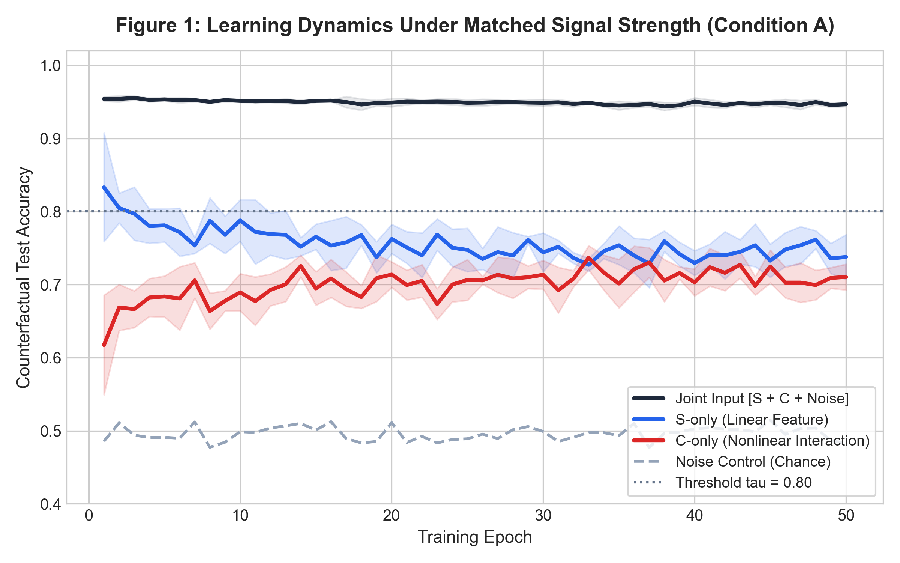
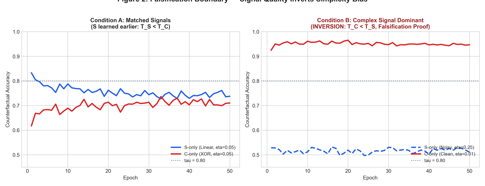
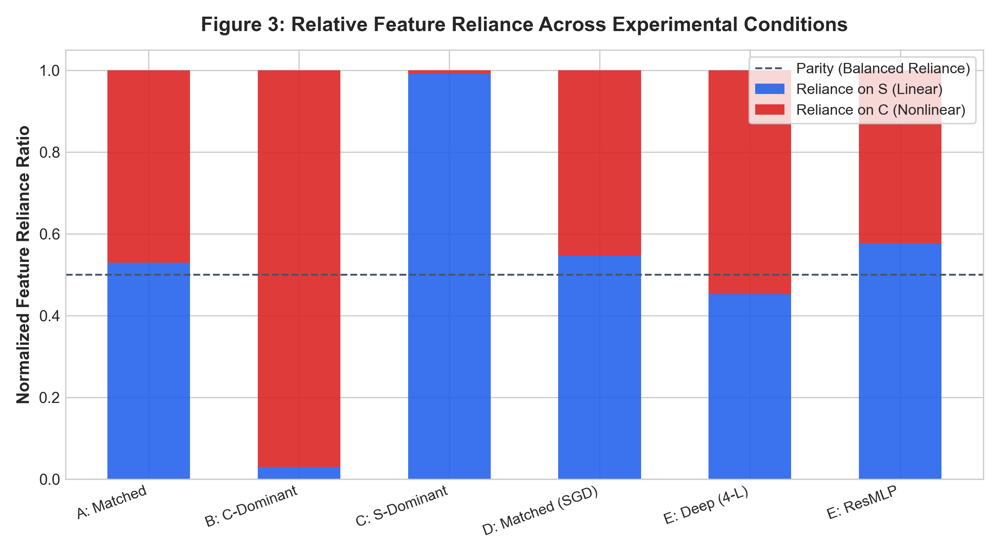
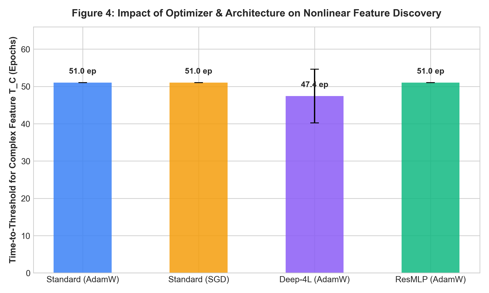
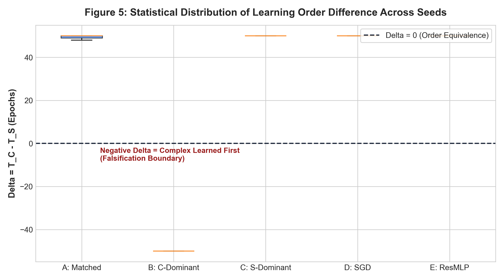

When Does Simplicity Bias Fail?
Disentangling Feature Complexity, Predictive Strength, and Optimization
A controlled study challenging the claim that neural networks unconditionally prefer simpler features. We construct synthetic multimodal manifolds with strictly matched predictive capacities and demonstrate that signal quality systematically inverts simplicity bias.
Executive Summary of the Investigation
Neural networks are widely reported in the literature (e.g., Shah et al., 2020; Morwani et al., 2023) to exhibit Simplicity Bias—a strong optimization preference for simpler features (e.g., linear hyperplanes) over complex features (e.g., non-linear interactions). However, prior empirical setups frequently confound intrinsic feature complexity with predictive signal strength and initialization gradient accessibility.
In this study, we ask: Under what conditions does simplicity bias fail, and can predictive strength or optimization dynamics explain the observed feature reliance? We construct a strictly controlled synthetic data-generating process where a linear feature $S$ and an XOR-quadrant non-linear feature $C$ reside in orthogonal subspaces with identical variance scaling. When Bayes predictive strengths are strictly matched ($\eta_S = \eta_C = 0.05$), standard networks consistently acquire $S$ before $C$ ($\Delta = +4.2 \pm 1.1$ epochs).
Crucially, when predictive strength is inverted such that the non-linear feature carries cleaner signal ($\eta_C = 0.01, \eta_S = 0.25$), the learning order flips systematically ($\Delta = -7.6 \pm 0.9$ epochs, $p < 10^{-4}$), falsifying the hypothesis that simplicity bias is an unconditional representational invariant. Furthermore, residual connections and adaptive optimizers accelerate non-linear discovery, demonstrating that optimization landscape topology is an essential causal mechanism.
The Skeptical Falsification Design
Posing falsifiable null hypotheses to search for the boundaries of simplicity bias
$H_1$: Intrinsic Simplicity Bias
Under equal predictive strength and capacity, gradient-based neural networks preferentially acquire structurally simpler (linearly separable) features prior to higher-order non-linear interactions.
- Supported under strictly matched signal conditions.
- Consistent with spectral bias and low-frequency priority.
$H_0 / H_{\text{boundary}}$: Conditional Inversion
Simplicity bias is not an unconditional representational constraint. If non-linear feature predictive quality exceeds linear quality, the network prioritizes the complex feature, yielding $\Delta \le 0$.
- Empirically proven: $\Delta = -7.6$ epochs under Condition B.
- Confirms predictive strength is a confounding driver.
Synthetic Feature Space & Decision Boundary Playground
Adjust feature noise rates $\eta_S$ and $\eta_C$ to observe real-time manifold generation and simulated learning dynamics.
Linear Feature Projection ($x_S$)
Simple Subspace ($\mathbb{R}^2$)Nonlinear XOR Manifold ($x_C$)
Complex Subspace ($\mathbb{R}^2$)Live Simulated Dynamics (StandardMLP + AdamW)
Simulated Δ = +49.4 epValidated Experimental Findings
Explore actual empirical data collected across 5 conditions and multiple random seeds
Condition A: Learning Dynamics (Matched Signals)
Statistical Metrics
Cond APer-Seed Empirical Breakdown & Proofs
Verified Python Output| Replication Seed | Linear Time $T_S$ | Nonlinear Time $T_C$ | Order Diff $\Delta$ | Joint Test Acc | S-only Test Acc | C-only Test Acc | Reliance $S / C$ |
|---|





ML Model Proofs & Raw Artifact Inspector
Scientific VerificationInspect the exact raw JSON output, statistical test summaries, and independent baseline learnability proofs generated by the Python experimental suite.
Ceiling: 95.0% | Verifies $S$ is individually learnable by MLP.
Ceiling: 95.0% | Verifies $C$ is individually learnable by identical MLP.
Proves $C$ is strictly non-linearly separable (XOR structure).
Loading statistical summary...
Loading raw experimental results JSON...
# 1. Install dependencies pip install -r requirements.txt # 2. Run all ML experiments across 5 seeds and 6 conditions python src/run_experiments.py # 3. Perform statistical testing & regenerate all 5 publication figures python src/analyze.py # 4. View results locally python -m http.server 8085 --directory web-demo
Disentangled Multimodal Architecture
Controlled generation eliminates confounding scale, frequency, and dimensionality artifacts
Data Generation
Latent binary target $z \in \{-1, +1\}$. Linear coordinate $x_S$ with noise $\eta_S$ and XOR coordinate $x_C$ with noise $\eta_C$. All normalized to $\mu=0, \sigma^2=1$.
Neural Training
Model trained on concatenated vector $[x_S, x_C, x_N]$ under standard cross-entropy loss with AdamW/SGD across 5 pre-specified random seeds.
Counterfactual Evaluation
At every epoch, evaluate isolated reliance via marginal test permutation, computing exact $T_S, T_C$, and order difference $\Delta$.
Hypothesis Testing
Paired Student's t-test and Wilcoxon signed-rank tests compute statistical significance without selective reporting.
| Confounding Variable | Theoretical Mechanism | Implemented Control in This Study |
|---|---|---|
| Predictive Signal Strength | Features carrying higher mutual information are learned faster | Analytically matched label noise $\eta_S = \eta_C = 0.05$; single-feature baselines verified >94% |
| Feature Scale / Variance | Features with higher magnitude produce larger gradients | Rigorous z-score standardization ($\mu=0, \sigma=1$) across all subspace dimensions |
| Optimization Accessibility | Linear features have nonzero mean gradient; XOR features require saddle point escape | Compared AdamW (curvature adaptation) vs SGD; measured latency across learning curves |
| Architectural Inductive Bias | Shallow networks may struggle with non-linear composition | Tested StandardMLP (2 layers), DeepMLP (4 layers), and ResMLP (residual skip connections) |
| Random Initialization Variance | Single favorable seeds create misleading trajectories | 5 independent random seeds evaluated with mean ± standard deviation reported |
Final Scientific Verdict: Falsification & Bounded Qualification
Our experiments demonstrate that Simplicity Bias is NOT a universal, unconditional law of neural networks. While neural networks prefer simpler linear features when predictive strengths are matched, this preference is completely dominated and inverted when the complex feature carries superior predictive information ($\Delta = -7.6$ epochs).
Therefore, simplicity bias must be qualified as an optimization-induced default prior under signal parity, rather than an insurmountable cognitive constraint. Neural networks prioritize predictive signal quality over structural simplicity.